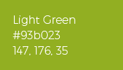

Versione 1.0
Questa è la guida per lo Stile Visivo di QGIS. Questo documento definisce gli standard per l’uso della nostra identità visiva e propone un rimodernamento del marchio di QGIS per renderlo più spiccato, visibile e adattabile ad una più ampia gamma di casi d’uso.
La Guida per lo stile visivo è un documento vivo, iniziato con l’obiettivo di sviluppare un messaggio e un’immagine coerente per QGIS. Si tratta di un documento «vivo» perché ci aspettiamo che si espanda, in quanto copriamo più casi d’uso in cui la coerenza visiva è importante e può essere descritta utilizzando regole più semplici. Gli standard e le semplici politiche qui descritti sono progettati per mantenere l’uniformità di presentazione necessaria per una promozione di successo e il marketing del progetto QGIS.
La nostra identità visiva simboleggia la forza, la promessa di qualità e la competenza di QGIS. Il corretto trattamento del logo, dei caratteri e del colore assicura che QGIS sia riconosciuto e si distingua in mezzo all’infinità di informazioni. Gli standard grafici sono un’espressione visiva di QGIS e dovrebbero servire come base per la nostra strategia di comunicazione globale.
Questa prima versione della Guida per lo Stile Grafico delinea gli elementi fondamentali del nuovo logo QGIS. Le versioni future si concentreranno sulle attività di branding e su come diffondere il marchio QGIS sul web, sui dispositivi mobili e sui materiali stampati.
Logotipo
Originale


Download logo file
Logo SVG
Logo PNG
Logo SVG monocromatico
Logo PNG monocromatico
Questa è la presentazione del nuovo logo QGIS. Mantenendo l’essenza del logo QGIS originale (la lettera Q con freccia che attraversa), questa nuova versione intende essere più decisa e scalabile, introducendo forme più semplici e incisive.
In basso l’elenco delle modifiche proposte.
- Lo spirito esistente è preservato ma il logo è più intenso
- Rimozione delle ombre
- La Q è senza grazie
- La freccia diventa parte integrante della lettera Q
- Il testo del logo QGIS è basato sul font Trueno, gratuito e libero.
Colore
Colori primari
Dark Green

HEX: #589632
RGB: 88, 150, 50
CMYK: 70.53, 18.84, 100, 3.7
Il colore Dark Green di QGIS è da usarsi per ogni elemento del logo nella versione monocromatica. Può essere usato come sfondo, titoli principali o colore di testo.
Light Green

HEX: #93b023
RGB: 147, 176, 35
CMYK: 50.62, 12.6, 100, 0.86
Il colore Light Green di QGIS è da usarsi per contenuti di minor importanza. Può venir utilizzato per sfondo secondario, testo o colore per link.
The gradient

I due colori primari sono usati come gradiente verticale nel logo. Questo gradiente può essere usato come sfondo per siti web e materiale stampato
Color Palette


Colori secondari
Lemon

HEX: #f0e64a
RGB: 240, 230, 74
CMYK: 11, 0, 79, 0
Orange

HEX: #ee7913
RGB: 238, 121, 19
CMYK: 0, 62, 96, 0
I colori Lemon e Orange di QGIS sono da usarsi per dar risalto e per i call to action
Color Palette


{kind=link}
{kind=link}
{kind=link}
{kind=link}
{kind=link}
{kind=link}
{kind=link}
{kind=link}
{kind=link}
{kind=link}
{kind=link}
{kind=link}
{kind=link}
{kind=link}
{kind=link}
{kind=link}
{kind=link}
{kind=link}
{kind=link}
{kind=link}
{kind=link}
{kind=link}
{kind=link}
{kind=link}
{kind=link}
{kind=link}
{kind=link}
{kind=link}